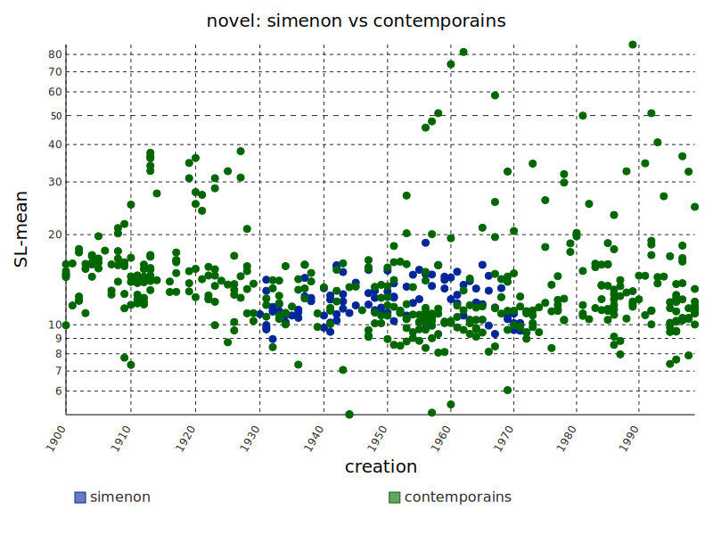
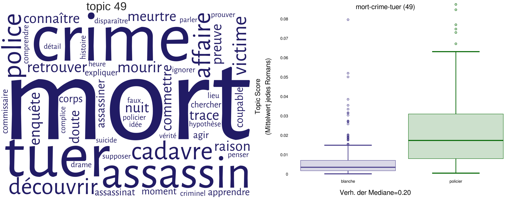
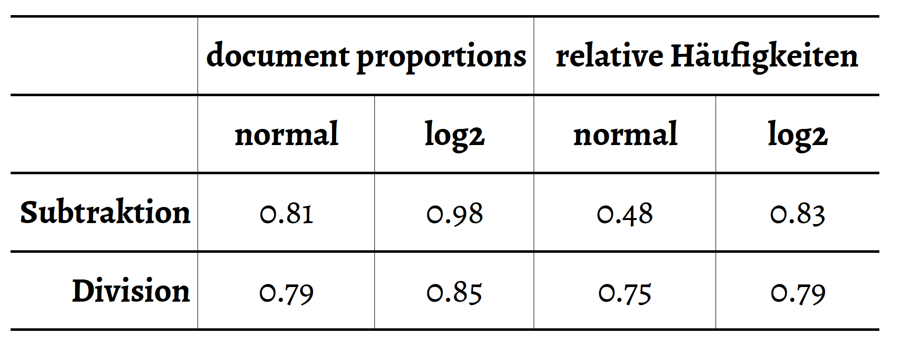

<!doctype html>
<html lang="en">
<head>
<meta charset="utf-8">
<!-- CUSTOMIZE THIS! -->
<title>Zeta -- Mainz 2018</title>
<meta name="author" content="Christof Schöch">
<!-- END -->
<meta name="description" content="Slides">
<meta name="apple-mobile-web-app-capable" content="yes">
<meta name="apple-mobile-web-app-status-bar-style" content="black-translucent">
<meta name="viewport" content="width=device-width, initial-scale=1.0, maximum-scale=1.0, user-scalable=no, minimal-ui">
<link rel="stylesheet" href="css/reveal.css">
<link rel="stylesheet" href="css/theme/simple.css" id="theme">
<!-- Code syntax highlighting -->
<link rel="stylesheet" href="lib/css/zenburn.css">
<!-- Printing and PDF exports -->
<script>
var link = document.createElement( 'link' );
link.rel = 'stylesheet';
link.type = 'text/css';
link.href = window.location.search.match( /print-pdf/gi ) ? 'css/print/pdf.css' : 'css/print/paper.css';
document.getElementsByTagName( 'head' )[0].appendChild( link );
</script>
<!--[if lt IE 9]>
<script src="lib/js/html5shiv.js"></script>
<![endif]-->
</head>

<body>
<div class="reveal">
<div class="slides">
<section data-markdown="" data-separator="^\n---\n" data-separator-vertical="^\n--\n" data-charset="utf-8" data-background-image="img/basics/uni-trier_icon.png" data-background-size="50px" data-background-position="right 10px top 10px">
<script type="text/template">

<!-- THIS IS WHERE THE CONTENT GOES! -->
<!-- Any section element inside of this container is displayed as a slide -->
<br/>
# Kontrastive Analyse mit Zeta
<br/>
<hr/>
<br/>
<br/>
Christof Schöch (mit José Calvo, Daniel Schlör, <br/>Ulrike Henny, Albin Zehe, Henning Gebhard)
<br/>
<small>
<br/>**Ringvorlesung *Transdisziplinäre Aspekte digitaler Methodik* **
<br/>Hochschule Mainz / IEG Mainz, 16. Mai 2018
</small>
<hr/>
<br/>
</img>


---
</img>
<br/>http://www.text-und-data-mining.de

---
# Überblick
<br/>
1. [Zahlen und Bedeutung](#/2)
2. [Distinktivitätsmaße](#/3)
3. [Zeta: Funktionsweise](#/4)
4. [Zeta: Anwendungsbeispiel](#(5)
5. [Varianten und Evaluation](#/6)
6. [Fazit](#/7)


---
# 1. Zahlen und Bedeutung

--
## Ein paar neuere Ergebnisse
<br/>
* Durchschnittliche Satzlänge in Simenons<br/>Romanen: 12.1 Wörter <!-- .element: class="fragment" data-fragment-index="1" -->
* Thematische Ähnlichkeit<br/>der Romane von Leroux und Ponson: 0.05 <!-- .element: class="fragment" data-fragment-index="2" -->
* Wahrscheinlichkeit des "Todes"-Topics in<br/>französischen Krimis: 2.0%  <!-- .element: class="fragment" data-fragment-index="3" -->

--
## Wie bekommen Zahlen eine Bedeutung?
<br/>
<p>Durch Vergleich mit...</p> <!-- .element: class="fragment" data-fragment-index="1" -->
* einer Spannbreite möglicher Werte <!-- .element: class="fragment" data-fragment-index="2" -->
* einer Spannbreite typischer Werte  <!-- .element: class="fragment" data-fragment-index="3" -->
* den Werten in relevanten Vergleichsdaten <!-- .element: class="fragment" data-fragment-index="4" -->

--
## Mittlere Satzlänge
<a href="img/novel-simenon-vs-contemporains_1900-2000_creation-SL-mean_scatterplot.svg"></a>

Simenon: 12.1 | Zeitgenossen: 15.1 Wörter

--
## Thematische Ähnlichkeit
<a href="img/6_clustering_marked.png"></a>
<p>Ponson/Leroux: 0.05 | Boisgobey/Gaboriau: 0.12</p>

--
## Topic-Wahrscheinlichkeit
<a href="img/2_topic49-wordle-comparison.png"></a>
<br/>Nicht-Krimis: 0.4% &nbsp; | &nbsp; Krimis: 2.0%
<br/>Signifikant unterschiedliche Verteilung? ja  <!-- .element: class="fragment" data-fragment-index="1" -->


---
# 2. Distinktivitätsmaße

--
## Ausgangslage
<br/>
* Omnipräsenz der vergleichenden,<br/>kontrastierenden Analyse von Texten <!-- .element: class="fragment" data-fragment-index="1" --> 
* Zahlreiche Maße der Distinktivität<br/>von Merkmalen ("keyness") <!-- .element: class="fragment" data-fragment-index="2" -->
* Standard-Tools, die sie implementieren:<br/>Antconc, WordCruncher, TXM, stylo, etc. <!-- .element: class="fragment" data-fragment-index="3" -->

--
## Wozu Distinktivitätsmaße?
<br/>
* Antwort auf die Frage <!-- .element: class="fragment" data-fragment-index="1" -->
    * Wie ungewöhnlich ist meine Beobachtung?
    * Wie distinktiv ist das beobachtete Merkmal?
* Zwei Perspektiven: <!-- .element: class="fragment" data-fragment-index="2" -->
    * Ich mache ein Beobachtung: Wie distinktiv ist sie?
    * Von allen denkbaren Merkmalen: welche sind am distinktivsten?

--
## Was ist "Distinktivität"?
<br/>
* Beruht auf dem Vergleich zweier Gruppen
* Reine Häufigkeit reicht nicht aus (=typisch)
* Vergleichsweise ungewöhnliche Häufigkeit (=distinktiv)

--
## Typisch Deutsch?
<a href="img/bier1.jpg"></a>
<small><small>
Source: User:Benreis <br/>https://commons.wikimedia.org/wiki/File:Aufse%C3%9F_Bier.jpg | licence: [CC-BY-SA](https://creativecommons.org/licenses/by-sa/3.0/deed.en)</small></small>

--
## Distinctly German!

<br/>

<p><small><small>
Source: User:Bundesstefan <br/>https://commons.wikimedia.org/wiki/File:Apfelschorle.jpg | licence: public domain.</small></small></p>


--
## Anforderungen an Distinktivitätsmaße
<br/>
* Distinktivität gegenüber Häufigkeit sinnvoll abwägen (Funktionswörter) <!-- .element: class="fragment" data-fragment-index="1" -->
* Distinktive Merkmale für die Gruppe insgesamt (Namen) <!-- .element: class="fragment" data-fragment-index="2" -->
* Cut-off der Distinktivität erkennbar (Signifikanztest) <!-- .element: class="fragment" data-fragment-index="3" -->
* Interpretierbarkeit der Ergebnisse <!-- .element: class="fragment" data-fragment-index="4" -->

--
## Gruppen von Distinktivitätsmaßen
<br/>
1. Erwartete vs. beobachtete Werte<br/>(bspw. log-likelihood-ratio) <!-- .element: class="fragment" data-fragment-index="1" -->
2. Gewichtung der Häufigkeiten (bspw. tf-idf) <!-- .element: class="fragment" data-fragment-index="2" -->
3. Hypothesentests zum Vergleich von Verteilungen<br/>(bspw. Welch’s t-Test, Wilcoxon-Test) <!-- .element: class="fragment" data-fragment-index="3" -->
4. Dispersionsmaße (bspw. deviation of proportions) <!-- .element: class="fragment" data-fragment-index="4" -->


---
# 3. Was ist Zeta?

--
## Zeta: Grundlage
<br/>
**dp<sub>i</sub>(Z) = df<sub> i</sub>(Z) / n(Z)**
<br/>
<br/>
* Z = Zielgruppe, V = Vergleichsgruppe
* Jeder Text wird in Dokumente (Segmente) gleicher Länge geteilt
* dp<sub>i</sub> (document proportion) = Anteil der Dokumente, in denen Merkmal *i* vorkommt

--
## Zeta: Berechnung
<br/>
**Zeta<sub>i</sub> = dp<sub>i</sub>(Z) - dp<sub>i</sub>(V)**
<br/>
<br/>
* dp<sub>i</sub> = Anteil der Dokumente einer Gruppe,<br/>in denen Merkmal *i* vorkommt
* Zeta: Subtraktion der Anteile in Z und V
* Berechnung für jedes Wort, absteigende Sortierung


--
## Zeta: Eigenschaften
<br/>
* Beruht auf dem Vergleich der Dispersionsgrade<!-- .element: class="fragment" data-fragment-index="1" -->
* Zeta liegt zwischen -1 und +1 (feste theoretische Spanne) <!-- .element: class="fragment" data-fragment-index="1" -->
* Kein inhärenter Schwellenwert der Distinktivität,<br/> kein inhärenter Signifikanztest <!-- .element: class="fragment" data-fragment-index="2" -->

--
## Zeta: Eigenschaften
<br/>
* Ungleichmäßig verteilte Merkmale (Figurennamen)<br/>bekommen keine hohe Zeta-Werte <!-- .element: class="fragment" data-fragment-index="2" -->
* Sehr weit verbreitete Merkmale (Funktionswörter)<br/>bekommen keine hohen Zeta-Werte <!-- .element: class="fragment" data-fragment-index="3" -->
* Bevorzugt Merkmale von mittlerer Häufigkeit<br/>(Inhaltswörter: Interpretierbarkeit) <!-- .element: class="fragment" data-fragment-index="4" -->


--
## Statistische Eigenschaften
<p><a href="img/fig-1_docprops-und-zetascores_mit-pointer.png"></img></a></p>
<p>Dokument-Anteile und Zeta-Werte (Franz. Theater)</p>


---
# 4. Anwendungsbeispiel<br/>Französisches Theater

--
## Distinktive Wörter
<a href="img/zetascores_comedie-tragedie_1000-lemmata-all.svg"></img></a>
<br/>Tragödie (links) vs. Komödie (rechts)

--
## PCA mit 50 distinktiven Merkmalen
<a href="img/threeway_pca.png"></img></a>
<br/>Komödien (rot) | Tragikomödien (grün) | Tragödien (blau)

--
## Boxplot der Verteilungen (PC1)
<a href="img/pcboxplot_comedie-tragedie-tragicomedie_3000-lemmata-all-25_rotated.png"></img></a>
<br/>Komödien (rot) | Tragikomödien (grün) | Tragödien (blau)

--
## Typische Vertreter einer Gattung
<a href="img/worksbyzeta_subgenre-tragedie-comedie_3000-lemmata-all_100.svg"></img></a>
<br/>Werke nach Anteil der Komödien-/Tragödienwörter

--
## Ergebnisse: Zeta und Gattungen
<br/>
* Position der Tragikomödie:<br/> näher verwandt mit Tragödie als mit Komödie <!-- .element: class="fragment" data-fragment-index="1" --> 
* Frage der Gattungen:<br/> "gute" Exemplare vs. Mischformen <!-- .element: class="fragment" data-fragment-index="2" --> 


---
# 5. Varianten und Evaluation

--
## Varianten von Zeta
<br/>
* Mathematische Variation<!-- .element: class="fragment" data-fragment-index="1" -->
    1. Statt document-proportions: relative Häufigkeiten
    2. Statt Subtraktion der Werte: Division 
    3. Statt unmodifizierte Werte: Logarithmus der Werte<br/><br/>
* Motivation: Gewünschte Effekte<!-- .element: class="fragment" data-fragment-index="2" -->
    1. Verringerter Begrenzungseffekt 
    2. Verbesserte Distinktivität
    3. Unverminderte Interpretierbarkeit

--
## Acht Varianten
<br/>
</img>
<br/>
<p>\*sd0 = Burrows Zeta; sd2 = log2-Zeta</p>

--
## Effekt auf Distinktivitätswerte
<br/>
</img>
<br/>
<small>Théâtre classique (Tragödie): sd0 vs. sd2</small>

--
## Effekt auf Distinktivitätswerte
<br/>
</img>
<br/>
<small>Théâtre classique (Tragödie): sd0 vs. sd2</small>

--
## Klassifikationstask: Überblick
<br/>
</img>

<!--
|                 |    document | proportions| relative    |Häufigkeiten|
|-----------------|:-----------:|:----------:|:-----------:|:----------:|
|                 |  **normal** |  **log2**  |  **normal** | **log2**   |
| **subtraction** |     0.81    |   0.98     |   0.48      |  0.83      |
| **division**    |     0.79    |   0.85     |   0.75      | 0.79       |
-->

<br/>
<small>Klassifikationstask: Tragödie vs. Komödie;<br/>Linearer SVM-Klassifier mit 40 top-distinktiven Merkmalen,<br/> dreifache Cross-Validation; tf-idf Baseline 0.49</small>


--
## Klassifikationstask: Detail
</img>
<br/>
<small>(Nach Zeta-Variante und Segmentlänge)</small>


---
# 6. Fazit

--
## Ergebnisse
<br/>
* Zeta: Nützliches Distinktivitätsmaß <!-- .element: class="fragment" data-fragment-index="1" -->
    * mathematisch sehr einfach
    * gut interpretierbare Ergebnisse
* Zeta-Varianten  <!-- .element: class="fragment" data-fragment-index="2" -->
    * sd2 (log2-Zeta) verschiebt die Wortliste  
    * sd2 erhöht Klassifikationsgüte und Robustheit

--
## Nächste Schritte
<br/>
* Einfluss der Segmentlänge (DH2018) <!-- .element: class="fragment" data-fragment-index="1" -->
* Interpretierbarkeit je nach Variante;<br/>Zielkonflikt Distinktivität vs. Interpretierbarkeit? <!-- .element: class="fragment" data-fragment-index="2" -->
* Systematische Evaluation der Zeta-Varianten <br/>und etablierter keyness-Maßen (siehe Lijffijt) <!-- .element: class="fragment" data-fragment-index="3" -->


--
## Vielen Dank!
<br/>
<br/>
**Literaturhinweise**
<small>

* Burrows, John F. (2007). "All the way through: testing for authorship in different frequency strata". _Literary and Linguistic Computing_, 22(1): 27-48.
* Gries, Stephan. "Dispersions and adjusted frequencies in corpora". *International Journal of Corpus Linguistics* 13:4 (2008), 403–437. 
* Hoover, David L. “Teasing out Authorship and Style with T-Tests and Zeta.” In _Digital Humanities Conference_. London, 2010. http://dh2010.cch.kcl.ac.uk/academic-programme/abstracts/papers/html/ab-658.html.
* Lijffijt, Jefrey et al. “Significance Testing of Word Frequencies in Corpora.” _Digital Scholarship in the Humanities_ 31, no. 2 (2014): 374–97. doi:10.1093/llc/fqu064.
* Oakes, Michael P. _Statistics for Corpus Linguistics_. Edinburgh: Edinburgh Univ. Press, 1998.
* Rayson, Paul, and R. Garside. “Comparing Corpora Using Frequency Profiling.” In _Proceedings of the Workshop on Comparing Corpora_, 1–6. Hong Kong: ACM, 2000.
* Schöch, Christof. „Zeta für die kontrastive Analyse literarischer Texte. Theorie, Implementierung, Fallstudie“, in: _Quantitative Ansätze in den Literatur- und Geisteswissenschaften_, hg. Toni Bernhard et al. Berlin: de Gruyter, 2018. https://www.degruyter.com/view/books/9783110523300/9783110523300-004/9783110523300-004.xml

<p><br/>With special thanks to pygal and reveal.js</p>


</small>


--
<br/>
<br/>
<br/>
## Danke!
<br/>
<br/>
<br/>
<br/>
<br/>
<hr/>
<p>Christof Schöch, 2018</p>
<p><a href="https://christofs.github.io/">christofs.github.io</a></p>
<p><a href="https://creativecommons.org/licenses/by/4.0/">CC-BY 4.0</a><br/></p>
<hr/>
<br/>
<br/>
</script>
</section>


<!-- DON'T TOUCH UNLESS YOU KNOW WHAT YOU'RE DOING :-) -->
</div>
<script src="lib/js/head.min.js"></script>
<script src="js/reveal.js"></script>
<script>
// Full list of configuration options available at:
// https://github.com/hakimel/reveal.js#configuration
Reveal.initialize({
    controls: true,
    progress: true,
    slideNumber: true,
    history: true,
    center: true,
    transition: 'slide', // none/fade/slide/convex/concave/zoom
    // Optional reveal.js plugins
    dependencies: [
        { src: 'lib/js/classList.js', condition: function() { return !document.body.classList; } },
        { src: 'plugin/markdown/marked.js', condition: function() { return !!document.querySelector( '[data-markdown]' ); } },
        { src: 'plugin/markdown/markdown.js', condition: function() { return !!document.querySelector( '[data-markdown]' ); } },
        { src: 'plugin/highlight/highlight.js', async: true, callback: function() { hljs.initHighlightingOnLoad(); } },
        { src: 'plugin/zoom-js/zoom.js', async: true },
        { src: 'plugin/notes/notes.js', async: true }
        ]
    });
Reveal.configure({ slideNumber: 'c' });
</script>
</body>
</html>
